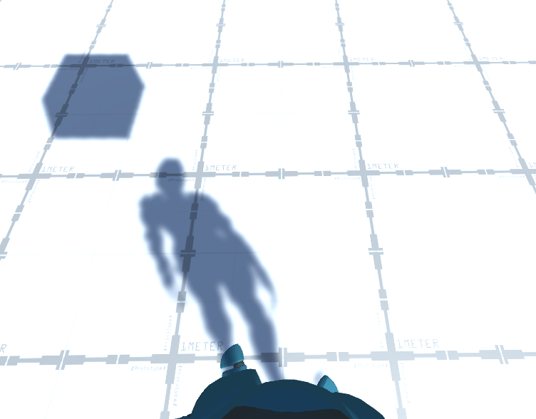

This portfolio contains all my personal documentation from the development of Skin, the intent of this document is to convey that I understand crucial aspects of software development.
TECHNICAL
SKIN
Water Shader Graph
The first addition I added to Skin was a Water Shader Graph. This allows for the implementation of water within the Unity engine.
Water Shader Graph Tutorial
Using the referenced video above, I created a water shader graph for Skin which requires:
- Lightweight Render Pipeline
- Waterbump Texture Map
- Shader Graph
- Water Shader Graph Texture (applied to plane)
NOTE: Simplest way to acquire a Waterbump Texture Map is by acquiring one off the internet, a simple google search will bring up multiple choices.
The most crucial part, the shader graph is complex and simple at the same time. Following the steps provided in the Tutorial I referred to above, it is simple to replicate however if I were to explain step-by-step we would be here all day. In a nutshell each component allows for additional properties to be added to the actual shader graph that will render in the game including animation for the current flow of the water.
Once all components are created place a plane asset into the enviroment and apply the shader graph to it, Once applied the configuration options will become available to adjust the water textures behaviours like colors and the speed at which the texture pans across the plane, this emulates the behaviour of a current or flowing water.
Issues: Due to Skin using HDRP (High Definition Render Pipeline) there is a rendering issue with the water as it is effected by some form of culling based on player location. This does not occur when using LWRP (Light Weight Render Pipeline) however as concluded by my own testing and consultation by previous Skin developer, Jordan Dargaville.


AI Path Following
One of the core game mechanics is the ability to posses animals. One of the animals you can posses is a bird, and will be
able to recon the surrounding area a bird is patrolling via the perspective of the bird.
This was implemented was via a path following script that was attached to the bird entity. This script also renders waypoints that can be place and arranged manually
to create a fixed repeating flight path for the bird to follow, this will allow visibility of the surrounding area.
Skin uses a different set of character models and animations based on the perspective of the player. For example,
while the player perspective shows the characters arms and what the player has equipped, they cannot see the physcial character model that effects the players hitbox, collision
and so on.
The problem with this, is that without the use of correct layering for entities in the running enviroment will cause shadows and entities and animations to be viewable to other players
or cameras within the enviroment. To correct this, I used the Layer tool and created a new layer to associate player viewable only assets, I have listed the process below.
- Create a new layer, click layer "add new layer"
- Select FPS arms and put them into the layer created "example"
- Remove the "example" layer from the cull list for every camera aside from the player camera
PROJECT DARK
Project Dark is my personal project that I am developing within Unity as a side project to learn more in-depth game developement skills. Over the semester alongside Skin I have slowly been adding features and mechanics to my game for testing.
Controller
The core focus of my game is the camera perspective I use, this has changed multiple times as I have experimented with fixed camera angles and first-person. Ultimately I decided
on a first-person perspective due to the effects I can add to the scene (Camera sway, fixed perspectives, etc.).
Currently I have three scripts that effect the player controls and mechanics.
- Player Controller
- Movement
- Mouse
Animation
Animation Source
Adding animations is simplistic with the animator inspector as it enables states and transitions to be mapped for specific animations to play when prompted.
For example, with my character there is a value recorded for the x and z-axis movement, isDead and isWalking checks.
If the player is walking the isWalking statement is set to true,
this triggers a transitition to play the walking animation. Based on the value of the x and z-axis the direction of the animation will determined and result in directional animation.

Pro Builder and Grid are Unity Tool's that completely overhauls Unitys scene envioment with features that allow for much easier placement of objects with snapping and
adjustment. These tools are technically two seperate entities but when both installed work together as Pro Grid adds a grid placement for everything within the scene with adjustable
snapping, while Pro Builder allows for the addition and manipulation of new or existing objects in the scene.
To use Pro Grid within the scene enviroment you will notice additional elements to the scene interface to the left. You can set the snapping increment and
the rendered grid (x, y or z-axis).
Once setup is complete and Pro Grid and Pro Builder are both installed, You can use the Pro Builder menu to create new shapes and related aspects such as the material and UV settings.
These tools make for fast construction of scenes for testing and implementation.
Adding new shapes is done by selecting new shape or opening the shape tool menu and then selecting a shape style and the dimensions, once finalised click the "Build" button and the
shape will be added to the envioment and added to the scene heirachy.
PROFESSIONAL
Communication
Initially we had scrums in which we would meet and have a progress update with the team and plan further additions. Due to COVID-19, we could not meet for scrums or
intertaction in general.
After entering lock down, MS Teams was used as the main form of communication. This worked as I tended to work on addtions and features indepedently from the team
as I was the only project 2 student for game development, thus more was expected of me due to my previous experience and learning from the previous semester I spent
in game development.
My main line of communication was with Adon as I would mainly consult Adon for approval of what next for me to research and implement into Skin or to update on current
developments.
Due to the lockdown, we weren't able to communcicate by holding meetings or debriefs. Teams was the only form of communcation we had available. Though Teams proves to provide
an easy enviroment to communicate and keep development moving.